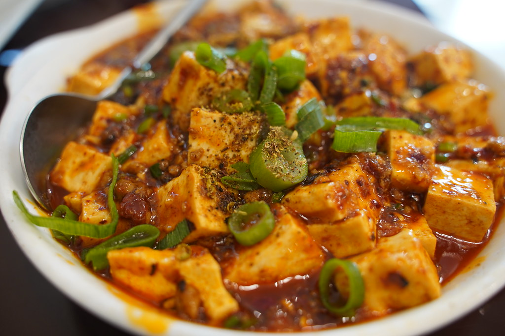

Mapo Tofu

Description
This Vegan Mapo Tofu is spicy, saucy, and seriously addictive — the ultimate comfort food for when you're craving bold, umami-packed flavor.
Inspired by the dish I always ordered at Chinese restaurants and my mom’s cozier version, this one hits the perfect balance of heat and heart.
Ingredients
- Silken or Soft Tou
- Dried Shitake Mushrooms
- Doubanjiang
- Garlic
- Ginger
- Soy Sauce
- Cornstarch
- Water
- Sichuan Peppers
- Chili Flakes
- Green Onions
- Sesame Oil
Steps
- Soak the mushrooms: Rehydrate the dried shiitake mushrooms in warm water for at least 20 minutes. Reserve 200ml of the soaking water for the sauce.
- Cut the tofu into cubes
- Finely mince the garlic and grate the ginger.
- Slice the mushrooms into small pieces.
- Thinly slice the scallions, separating the white and green parts.
- In a pot of salted boiling water, blanch the tofu cubes for 3 minutes. Gently strain and set aside.
- Heat oil in a pan over medium heat. Add the mushrooms and stir-fry until lightly golden.
- Add the garlic, ginger, and white parts of the scallions. Sauté for another 1–2 minutes.
- Stir in doubanjiang, soy sauce, chili flakes, sugar, Sichuan peppercorns, and the reserved mushroom water. Mix well and bring to a gentle boil.
- Gently add in the tofu cubes, spooning sauce over to coat.
- Once the sauce comes to a boil, stir the cornstarch and water together to make a slurry. Slowly pour it into the pan while stirring gently.
- Simmer on low until the sauce thickens and turns glossy.
- Top with the green parts of the scallions. Serve hot with a warm bowl of rice.
Home